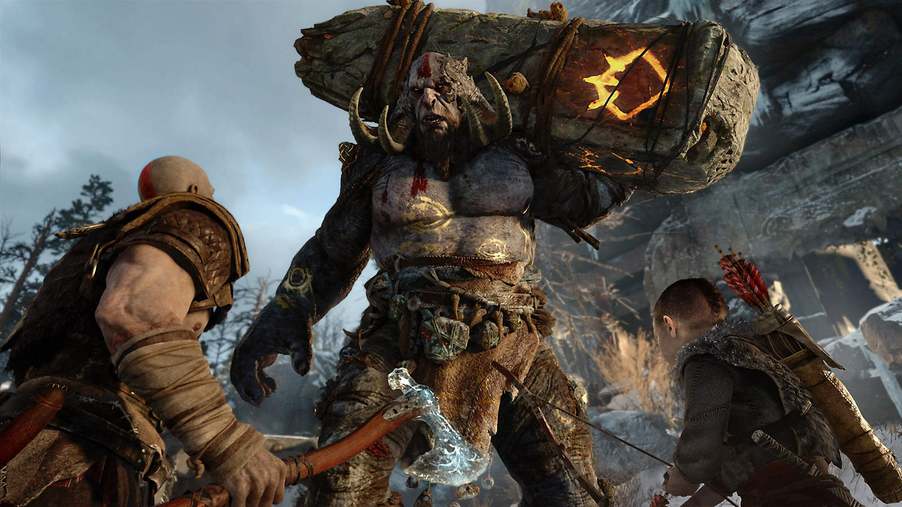

Sobreviva ao reino nórdico
Com a vingança contra os deuses do Olimpo em um passado distante, Kratos agora vive como um mortal no reino dos deuses e monstros nórdicos. É nesse mundo duro e implacável que ele deve lutar para sobreviver... e ensinar seu filho a fazer o mesmo.

Uma segunda chance
Kratos é pai novamente. Como mentor e protetor de Atreus, um filho determinado a ganhar seu respeito, ele é forçado a encarar e controlar a fúria que há muito tempo o define enquanto viaja por um mundo ameaçador com o seu filho.

Um mundo mais sombrio e primitivo
Do mármore e colunas ornadas do Olimpo para as florestas, montanhas e cavernas da história nórdica pré-era viking, este é um reino claramente novo, com suas próprias espécies de criaturas, monstros e deuses.